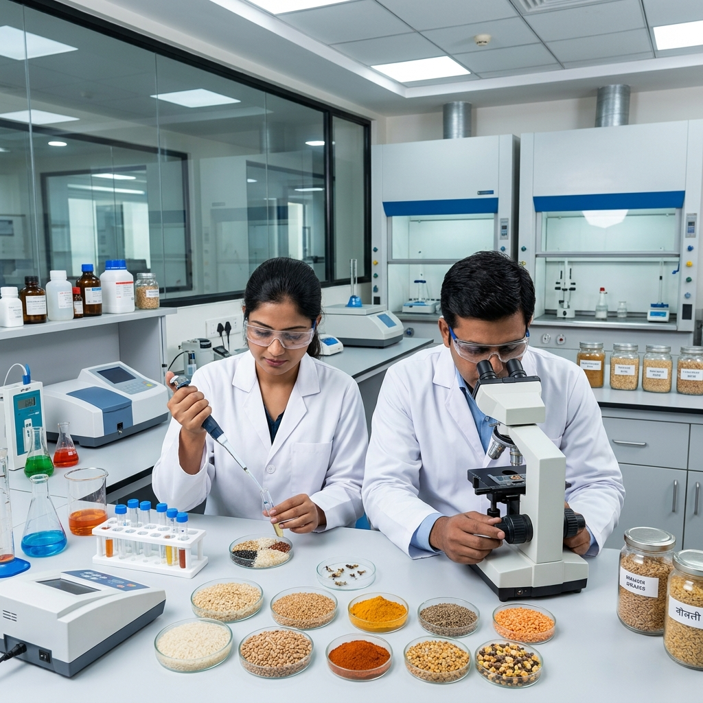
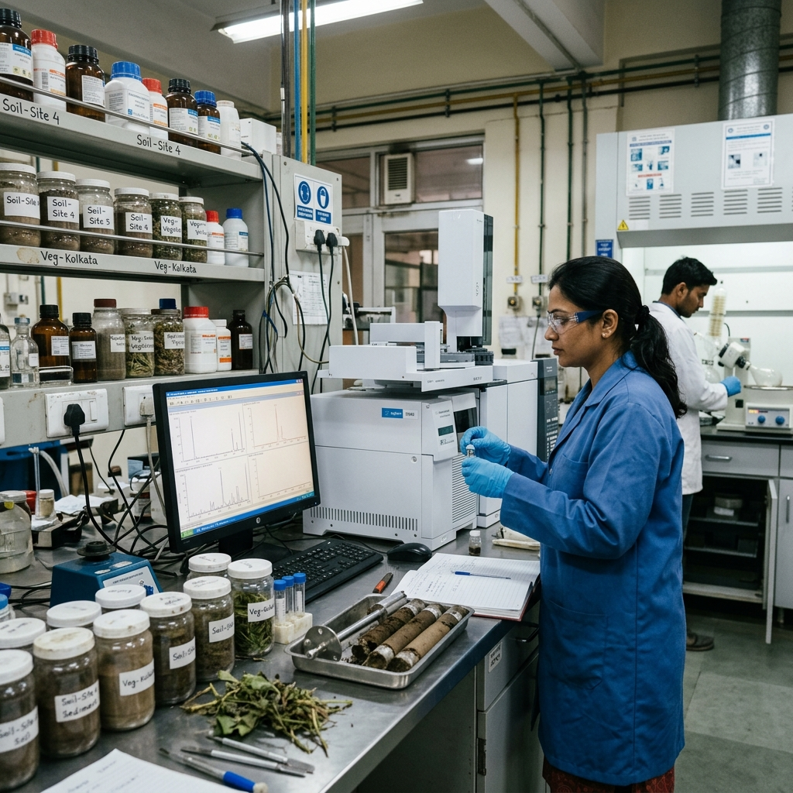
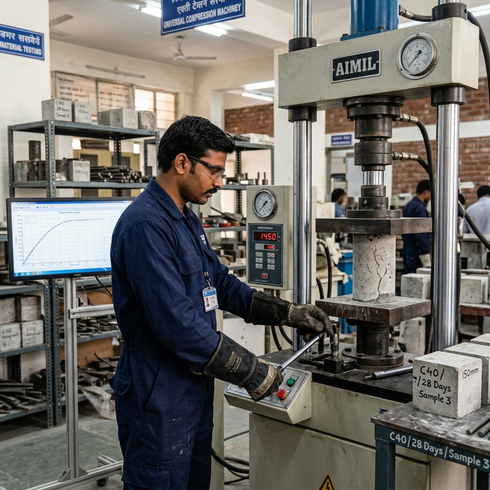

Advanced Analysis. Trusted Results.
AumNamah Radioanalytical Lab delivers precise, reliable, and compliant radiochemical and radiation analysis. We safeguard industries, support cutting-edge research, and protect global healthcare standards.
0% Precision Certified
Triple-tier diagnostic safety validation
Quality First
Strict compliance to global standards for authentic results.
Innovation Driven
State-of-the-art instrumentation for low detection limits.
Global Standards
Delivering trusted regulatory analysis worldwide.
Safety Focus
Our mission is to enhance safety through accurate testing.
Our Services
Radiological Testing for a Safer Tomorrow

Food and Agriculture
Crops, marine foods, meat, milk, poultry and agricultural products testing.
arrow_forward

Industrial Samples
All effluents (solid, liquid, gaseous), tissue papers and industrial materials.
arrow_forwardComprehensive Testing
Our Analytical Scope
We specialize in accurate, reliable, and compliant radiochemical and radiation analysis to support industries, research institutions, healthcare, environmental monitoring, and regulatory bodies.
Gamma Emitting Radionuclide in Food & Agriculture
Cs-134, Cs-137, Co-60, K-40 & Gross Beta
- check_circle Bakery & Confectionary: Breads & Rolls, Cakes, Biscuits
- check_circle Crops Produce: Cereals, Millets, Pulses, Oil Seeds, Roots
- check_circle Marine Foods: Fresh Water Fishes, Crustaceans, Seaweeds
- check_circle Meat & Poultry: Red Meats, Processed Meats, Eggs
- check_circle Dairy: Milk, Milk Powders, Cheese, Frozen Desserts
- check_circle Spices: Whole & Ground Spices, Condiments, Additives
- check_circle Other: API, Cosmetics, Honey, Oils, Beverages, Tea
Gamma Emitting Radionuclide (NORM) in Environment
Ra-226, Th-232, U-238 & Gross Beta
- Liquid Effluents: Laboratory, Medical, Industrial, Municipal
Ra-226, Th-232, U-238 & K-40
- Ores & Metals: Heavy Mineral Sands, Bauxite, Coal, Slags
Cs-134, Cs-137, Co-60, Ra-226, Th-232, U-238, K-40 & Gross Beta
- Soil & Biota: Soils, Sediments, Vegetation, Biota
Gamma Emitting Radionuclide in Water
Gross Alpha, Gross Beta & Uranium Concentration
- water_drop Drinking Water: Packaged, Treated, Potable, Natural Mineral
- water_drop Industrial Water: Process Water, Rinse Water, Waste Water
- water_drop Source Water: Construction Water, Borewell Water, Raw Water
verified Why Choose Us?
- State-of-the-art instrumentation
- High accuracy & low detection limits
- Experienced radiation scientists
- Strict safety & quality protocols
- National & international standards compliant
Technology
State-of-the-Art Instrumentation
We are equipped with advanced testing technologies to deliver the highest level of accuracy in measurement.
Alpha Scintillation Counting System
High-precision detection of alpha-emitting radionuclides in environmental and biological samples.
Low Beta Counting System
Sensitive measurement of low-level beta activity essential for compliance and environmental monitoring.
Gamma Spectrometry System
Qualitative and quantitative analysis of gamma-emitting isotopes across various sample matrices.
Contamination Monitor
Alpha, Beta, Gamma and soft X-rays exposure survey meter for comprehensive safety verification.
LED Fluorimeter
Advanced optical instrument for precise trace-level analysis, specifically tuned for uranium concentration measurement.
ISO
Certified Laboratory
0+
Testing Parameters
0+
Happy Clients
0+
Years Experience
Partner With Us for Precision
We are always open to new partnerships and collaborations.